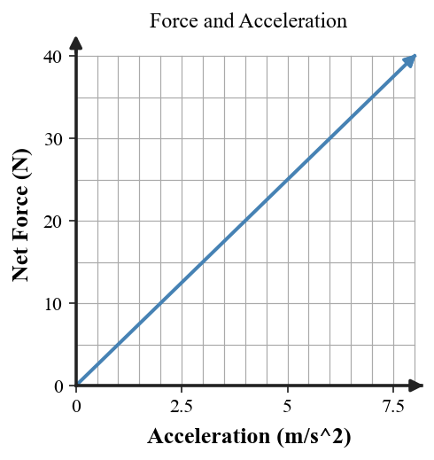
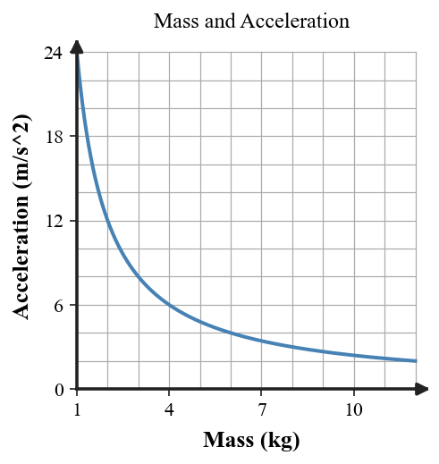

Six-question DOK check for Section 3.1: 2 DOK 1, 2 DOK 2, 1 DOK 3, and 1 DOK 4.
Which quantity describes how quickly velocity changes: force, mass, acceleration, or speed?
Classify the force model as balanced or unbalanced.
An object accelerates at 5 m/s² and has a mass of 10 kg. Determine the net force.
At one point on the force-acceleration graph the net force is 20 N and the acceleration is 4 m/s². Determine the cart mass.

Use both graphs to explain why force and acceleration are related but are not the same physical quantity.

A class changes the pulling force on one cart while keeping the cart mass constant. Design a short investigation that would test the relationship between net force and acceleration. Identify the variable changed, variable measured, control, and evidence you expect.